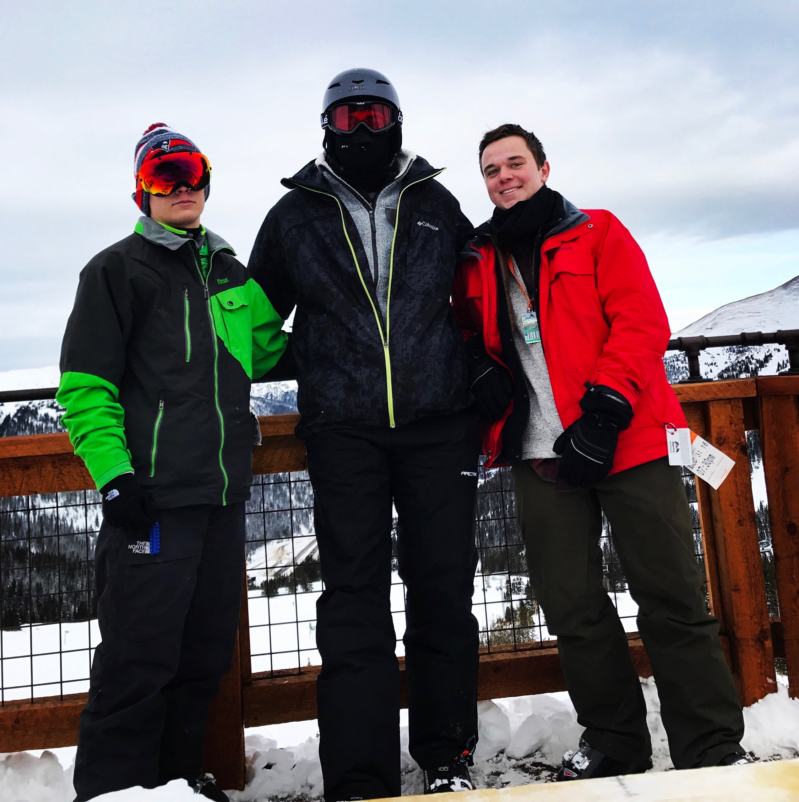
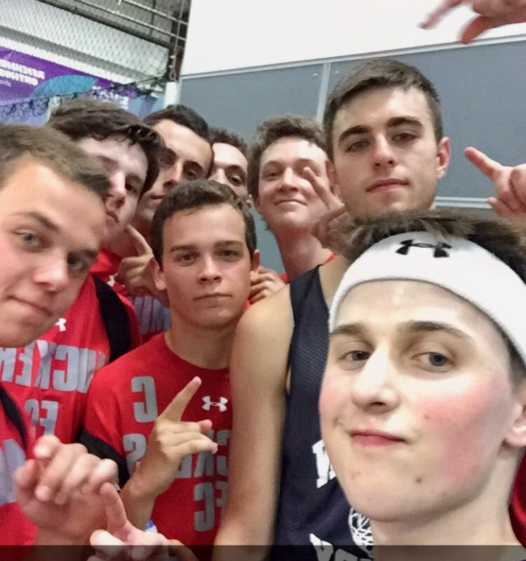

Throughout my life I have always been shorter, but very quick and athletic. I enjoy playing all sports on a competitive level, but also just pick-up
with my friends I find is one of my favorite activities. However, throughout my life I've always really enjoyed soccer, and skiing.
I grew up skiing at a mountain called Mad River Glen in Vermont.
Soccer is another sport I have loved and enjoyed from a young age. I use my speed
and hand eye coordination to gain anadvantage and usually play striker,however
I can play just about any position well including goalie. It is also a sport I am able
to enjoy with my friends, my senior year of high school my friends and I made an
indoor soccer team which I was the captain of and we ended up winning the
championship!
It is a skiers only
mountain, meaning no snowboarders are allowed and it has a reputation of being one
of the toughest mountains in the east. I was able to quickly teach myself by going down
harder trails than I should be going down, but I love the adrenaline, and love the feeling
of shredding through the snow on a sunny winter day more than anything.
